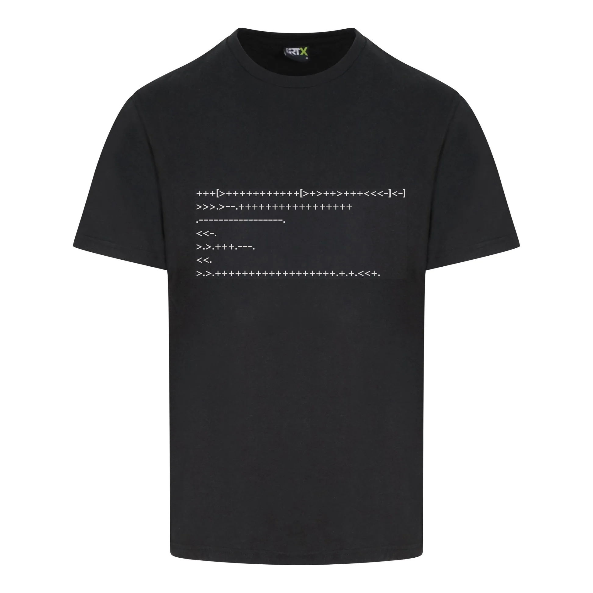
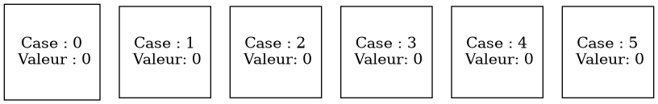

What The Brainfuck !
Table of Contents

1. Introduction au puzzle
Programmer est quelque chose de facilement maîtrisable, il suffit souvent d’un cours de moins d’une centaine de pages pour apprendre plus ou moins n’importe quel langage. Bien sûr, l’apprentissage met plus ou moins de temps selon la “difficulté” du langage en question. Pour un programmeur, un langage de programmation facile set traduit notamment par un nombre de “mots-clés” limités. En effet, si un langage dispose d’un nombre réduit de termes, il sera plus rapide et facile de tous les maîtriser. Ces mots clés, ou instructions doivent aussi avoir un rôle clair, pour faciliter la compréhension d’un code.
Nous allons donc ici étudier un langage “facile”, ne comportant que 8 instructions, avec pour chacune un rôle bien défini et facile à comprendre. Le piège ? Ces instructions ne sont représentées que par un seul caractère, constituant une pratique peu intuitive. Avant de présenter chaque instruction, présentons le langage en lui-même. Ce langage, le brainfuck, est le fruit de l’informaticien Suisse Urban Müller est un langage dit minimaliste. Il ne présente, en dehors d’un challenge d’algorithmique et de programmation, aucune utilité de par ses capacités limités.
Pour comprendre ces dites capacités, il faut comprendre que ce langage agit sur un tableau linéaire, où chaque case est initialisée à 0.

Figure 1: Visualisation du tableau sur lequel le Brainfuck agit
Pour chaque case du tableau, 8 actions sont donc possibles (les 8 instructions du Brainfuck) :
>, pour aller à la case suivante, on parle aussi d’incrémentation du pointeur, car en imaginant un pointeur qui pointe sur la case sur laquelle agir, cette action fait avancer le pointeur d’une case,<, pour aller à la case précédente, ou décrémentation du pointeur,+, pour ajouter 1 à la valeur de la case pontée,-, pour soustraire 1 à la valeur de la case pointée,., pour afficher le code ASCII de la valeur de la case pointée,,, pour mettre la valeur de la case pointée à une valeur saisie par l’utilisateur,[, pour ignorer le code jusqu’au]correspondant si la valeur de la case pointée est égale à 0,], pour revenir jusqu’au[correspondant si la valeur de la case pointée est différente de 0,
Le problème à traiter en langage C est donc de créer un compilateur qui lit et éxécute le code rentré par un utilisateur, et de gentiment lui renvoyer une erreur s’il détecte un dysfonctionnement.
1.1. Les données auxquelles nous disposons sont donc :
- Le nombre de lignes de notre programme, un entier
- Le nombre de valeurs saisies par l’utilisateur au cours du programme, un entier
- La taille du tableau sur lequel le programme va agir, un entier
- Le code en brainfuck du programme, répartit en plusieures lignes dont le nombre a été donné plus haut, les caractères autres que ceux pris en compte par le langage est considéré comme un commentaire, c’est une chaîne de caractères
- Les arguments saisis par l’utilisateur (Ici, les arguments sont donnés avant l’exécution du programme, donc l’instruction
,récupèrera la valeur depuis un tableau par exemple, ce sont des entier
Tous les entiers sont inférieurs ou égaux à 100.
1.2. Les données à renvoyer sont donc :
- Si le programme s’est bien passé, il faut afficher les valeurs dont les cases ont reçu l’instruction
. - Dans le cas contraire une des trois erreurs suivantes :
- “
SYNTAX ERROR”, s’il n’y a pas autant de[que de], cette erreur doit être annoncée avant l’exécution du programme, pour éviter les erreurs - “
POINTER OUT OF BOUNDS”, si la case pointée n’existe pas (donc le pointeur est en dehors du tableau) - “
INCORRECT VALUE”, si la valeur d’une case est en dehors de l’intervalle [0;255]
- “
2. Résolution du puzzle
2.1. Résumé de la méthode
Nous récupérons le programme (en ignorant ce qui n’est pas un caractère brainfuck, pour éviter les commentaires) et vérifions s’il y a une éventuelle erreur de syntaxe. Sinon, nous initialisons le tableau sur lequel le programme va agir, puis nous parcourons le code caractère par caractère, en réalisant l’action indiquée par chaque caractère, tout en faisant attention qu’il n’y ait aucune erreur, sinon quoi nous stoppons l’exécution et renvoyons le message adapté. Si l’exécution s’est bien passée, nous affichons le texte final.
2.2. Transposition en langage C
Lorsque le programme est rentré, nous regardons et sauvegardons chaque caractère brainfuck dans une chaîne de caractères, qui sera parcourue dans la boucle principale du programme.
Pour chaque [, nous incrémentons la valeur des crochets de 1 de la décrémentons de 1 pour chaque ], si cette valeur est non-nulle, nous renvoyons SYNTAX ERROR et arrêtons le programme.
Sinon, nous créons le tableau sur lequel le programme va agir, en lui assignant dynamiquement le nombre de cases voulues, où chaque case est initialisée à 0, puis sauvegardons les valeurs “saisies par l’utilisateur”.
Nous entrons dans la boucle principale, qui va parcourir chaque valeur de la chaîne de caractères contenant le programme brainfuck non commentée. Elle peut aussi s’arrêter à la rencontre d’une erreur.
Cette boucle teste chaque caractère :
>, nous passons à la case suivante du tableau, en incrémentant une variable qui sert de pointeur. Si nous sommes déjà sur la dernière case, nous renvoyons l’erreurPOINTER OUT OF BOUNDS<, nous passons à la case précédente du tableau, en décrémentant la variable. Si elle est déjà à 0, nous renvoyons l’erreurPOINTER OUT OF BOUNDS+, dans la case numéro pointeur de notre tableau, nous ajoutons 1 à la valeur. Si elle est déjà à 255, nous renvoyons l’erreurINCORRECT VALUE-, dans la case numéro pointeur de notre tableau, nous retirons 1 à la valeur. Si elle est déjà à 0, nous renvoyons l’erreurINCORRECT VALUE., nous ajoutons à la chaine de caractères réponse la valeur ASCII de la case pointée.,, nous prenons la valeur correspondante dans le tableau des arguments pour changer la valeur de la case pointée. Il n’y a pas de risque de dépassement car la valeur est inférieure à 100 (précisé plus tôt)[, si la valeur de la case pointée est nulle, nous sautons le code jusqu’au]correspondant, en modifiant le compteur de la boucle principal], si la valeur de la case pointée est non-nulle, nous revenons jusqu’au[correspondant, en modifiant le compteur de la boucle principal
Pour les deux derniers cas, nous parcourons le code en augmentant le nombre de crochets pour chaque crochet ouvrant ou fermant (selon le crochet de départ), et en réduisant le nombre de crochets pour chaque crochet fermant ou ouvrant (selon le crochet de départ). Le crochet correspondant est le crochet fermant ou ouvrant (selon le crochet de départ) avec un nombre de crochet nul.
S’il y a eu une erreur nous l’affichons
Sinon, nous affichons la chaîne de caractère réponse.
2.3. Code en langage C de la résolution
char output[1025] = {}; char prog[1025] = {}; int argv[100] = {}; int brackets = 0; int pointer = 0, line = 0, argp = 0; char error[64] = {'\0'};
Nous commençons par initiliser nos variables :
char output[1025]est notre chaîne de caractères réponse, avec une taille élargie pour prévoir les cas extrêmes (un programme affichant en boucle la prmière valeur)char prog[1025]est la chaîne de caractères qui contiendra le programme sans commentaireint argv[100]est le tableau d’entier qui contiendra toutes les “saisie de l’utilisateur”, autrement dit les arguments du programme. Le nom est une référence au langage C, la fonctionmainelle-même ne contient pas cet argument, nous permettant de l’utiliser sans risquesint bracketsest notre compteur de crochetsint pointerest la variable qui donne le numéro de la case pointéeint linenous servira à écrire dans la chaîne de caractèresprogint argppermettra de prendre le bon argument dans le tableauargv.char error[64]sera la chaîne de caractères qui renverra les potentielles erreurs
scanf("%[^\n]", r); fgetc(stdin); for(int j = 0; r[j] != '\0'; j++) {
Pour chaque ligne de code nous entrons dans une boucle qui s’arrête lorsque la fin est atteinte:
Cette boucle est constituée de 3 bloc conditionnels:
if(r[j] == '>' || r[j] == '<' || r[j] == '+' || r[j] == '-' || r[j] == '.' || r[j] == ','){ prog[line] = r[j]; line++; } if(r[j] == '['){ prog[line] = r[j]; brackets++; line++; } if(r[j] == ']') { prog[line] = r[j]; brackets--; line++; } }
Dans un premier cas, si les caractères >, <, +, -, . ou , sont rencontrés, nous les ajoutons dans la chaine de caractères prog, à la line ème place, en augmentant line ensuite
Pour les cas où [ et ] sont rencontrés, le principe est le même, mais nous incrémentons dans le premier cas la variable brackets et la décrémentons dans le deuxième cas.
Ce qui permet à la sortie de la boucle le test suivant pour détecter une erreur de syntaxe:
if(brackets) { printf("SYNTAX ERROR"); }
Nous renvoyons l’erreur SYNTAX ERROR si la variable brackets est non-nulle, signifiant qu’il n’y a pas autant de [ que de ]
Sinon, nous continuons le programme :
for (int i = 0; i < N; i++) { int c; scanf("%d", &c); argv[i] = c; }
Dans cette boucle, nous sauvegardons chaque saisie de l’utilisateur dans le tableau argv.
Nous créons ensuite le tableau sur lequel le brainfuck va agir :
int* array = NULL; array = malloc(S*sizeof(int)); if(array == NULL) { exit(0); }
La variable S est celle qui correspond à la taille voulue du tableau.
Nous utilisons ici la fonction malloc, qui demande une place en mémoire de S fois la taille d’un entier, car le tableau que nous voulons créer est un tableau d’entiers.
Nous n’oublions pas de tester si l’allocation a fonctionné, dans le cas où 128 Go de mémoire aurait été demandé et la demande d’allocation refusée, il est préférable de stopper le programme avec l’instruction exit(0) (qui agit comme return dans la fonction main()) qui évite au programme d’agir sur une mémoire qui ne lui a pas été allouée et de provoquer des conséquences imprévues.
Sinon, nous continuons le programme, en entrant dans la boucle principale :
for(int i = 0; prog[i] != '\0' && error[0] == '\0'; i++) {
Ici, la boucle s’arrête si le compteur pointe à la fin de notre chaîne de caractères du programme, car il arrivera que le compteur soit modifié à l’intérieur de la boucle.
Notre boucle s’arrête aussi si la chaîne de caractères erreur est non-vide, signifiant qu’il y a une erreur qu’il faut renvoyer avant que cela ne créé d’autres erreurs.
Cette boucle est constituée d’un unique test, sous la forme d’un switch, qui vérifie le caractère actuel dans le programme:
switch(prog[i]) {
Nous allons étudier chacun des 8 cas:
case '>': pointer++; if(pointer >= S) sprintf(error, "POINTER OUT OF BOUNDS"); break; case '<': pointer--; if(pointer < 0) sprintf(error, "POINTER OUT OF BOUNDS"); break;
Dans ces deux cas, nous incrémentons (>) ou décrémentons (<) le pointeur, ce qui change la case pointée (Pour passer à la case suivante, il suffit d’incrémenter la variable pointer, et inversement pour passer à la case précédente)
Si la case pointée n’est pas présente dans le tableau, nous changeons la chaîne de caractères erreur à POINTER OUT OF BOUNDS, ce qui nous fait donc sortir de la boucle.
case '+': array[pointer]++; if(array[pointer] > 255) sprintf(error, "INCORRECT VALUE"); break; case '-': array[pointer]--; if(array[pointer] < 0) sprintf(error, "INCORRECT VALUE"); break;
Dans ces deux cas, nous augmentons (+) ou réduisons (-) la valeur de la case pointée, soit la pointer ème case du tableau.
Si la valeur de la case pointée n’est plus dans l’intervalle [0,255], nous changeons la chaîne de caractères erreur à INCORRECT VALUE, nous faisant sortir ainsi de la boucle.
case '.': sprintf(output,"%s%c", output, array[pointer]); break;
Pour le cas ., nous ajoutons à la chaîne de caractères réponse la valeur de la case pointée en ASCII.
case ',': array[pointer] = argv[argp]; argp++; break;
Pour le cas ,, nous changeons la valeur de la case pointée à la valeur correspondante du tableau des arguments, puis nous passons à la case suivante dans ce dernier tableau pour préparer la prochaine valeur à être utilisée.
(argp pour argument pointer)
case '[': if(!array[pointer]) { brackets = 0; do { if(prog[i]== ']')brackets++; if(prog[i]== '[')brackets--; i++; }while(brackets); } break; case ']': if(array[pointer]) { brackets = 0; do { if(prog[i]== ']')brackets++; if(prog[i]== '[')brackets--; i--; }while(brackets); } break;
Dans ces deux dernier cas, nous vérifions si la valeur de la case pointée correspond au critère demandé (Valeur nulle pour [, et non-nulle pour ]).
Si la condition est remplie, alors nous modifions le compteur principal (i) pour arriver au crochet correspondant.
Pour éviter de mélanger les crochets, nous modifions la variable brackets pour trouver le crochet correspondant (qui est le crochet inverse au crochet de départ pour lequel la variable vaut 0)
Après la boucle, si nous avons détecté une erreur, nous la renvoyons, sinon nous renvoyons la chaîne de caractères réponse.
if(error[0]!='\0') { printf("%s", error); } else{ printf("%s", output); }
Si vous vous demandiez, évidemment que la variable array a été libérée après l’allocation dynamique :
free(array);
3. Solution d’un autre CodinGamer
Il peut paraître compliqué de trouver des solutions différentes lorsqu’il s’agit de créer des compilateurs de brainfuck. Cependant l’utilisateur Alyovano a utilisé une solution différente de celle étudiée, sur deux points :
Premièrement dans les cas d’erreur, il n’utilise pas de chaîne de caractères erreurs.
Il renvoie directement l’erreur avec return(printf("ERROR")), ce qui permet de ne pas utiliser de la mémoire e créant une chaîne de caractères
Voici les erreurs qui sont renvoyées :
if (r[j] == '+') { out[k] += 1; if (out[k] > 126 || out[k] < 0) return (printf("INCORRECT VALUE")); } else if (r[j] == '-') { out[k] -= 1; if (out[k] > 126 || out[k] < 0) return (printf("INCORRECT VALUE")); } else if (r[j] == '>') { k++; if (k > S - 1) return (printf("POINTER OUT OF BOUNDS\n")); } else if (r[j] == '<') { k--; if (k == -1) return (printf("POINTER OUT OF BOUNDS\n")); }
Deuxièmement, la chaîne de caractère réponse a aussi disparu, pour laisser place à un affichage progressif, ce qui fait économiser, là aussi, de la mémoire
Voici le cas . pour l’affichage :
else if (r[j] == '.') { printf("%c", out[k]); }
Cette solution est donc efficace en terme d’économie de mémoire.
4. Un exemple de programme en Brainfuck
Voici un programme simple affichant “Hello World”, issu d’un des tests du puzzle :
++++++++++[>+++++++>++++++++++>+++<<<-]>++.>+.+++++++..+++.>++.<<+++++++++++++++.>.+++.------.--------.>+.
Sortie :
Hello World!
Voici un autre programme, s’utilisant dans le terminal linux permettant d’écrire une lettre passée en argument en couleur (ici en rouge):
\[e0;31m
++++++++++[>+++++++++>+++++<<-]> ++ . - . ++++++++++ . >-- . +++++++++++ . -------- . -- . < ++++++++ . >,.
Voici un dernier programme qui affiche un programme brainfuck qui affiche “Hello World!”, (basé sur l’exemple précédent)
+++++++++[>+++++>+++++++>++++++++++<<<-] >--.......... >>+. <-. <....... >. <.......... >. <... >--... <++. >>++. <++. <--.. +++. >. <---. +++. ---....... +++.. ---... +++. >. <---.. +++. >--.. <---............... +++. >++. <. ---... +++. -...... +. -........ +. >. <---. +++.
Sortie :
++++++++++[>+++++++>++++++++++>+++<<<-]>++.>+.+++++++..+++.>++.<<+++++++++++++++.>.+++.------.--------.>+.
5. Bilan
Ce puzzle permet de découvrir et de comprendre le brainfuck, qui est un langage très intéressant, au-delà du puzzle. Ce qui n’a pas été précisé dans la présentation du langage, c’est qu’il est turing complete, c’est-à dire qu’il est possible de recréer un ordinateur à partir de ce langage, et de pouvoir créer n’importe quel programme.
D’autres langages découlent du brainfuck et utilisent les mêmes instructions, comme le f**kf**k, avec des instructions aux noms discutables, le Ook, qui découle d’une blague issu d’un roman de Terry Pratchett, ou encore le Spoon, qui utilise un codage de Huffman, rendant le code semblable à du binaire.